Hand, Fuß und Rücken erkennen
Training zur Links-Rechts-Erkennung mit Hand-, Fuß- und Rückenbildern: Zeit und Trefferquote messen, Verlauf sehen – begleitet von deiner Physiotherapie.
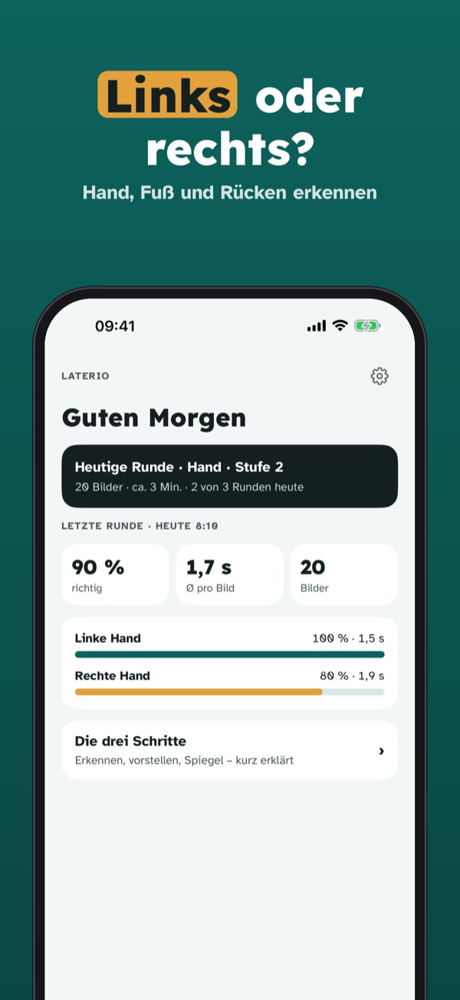
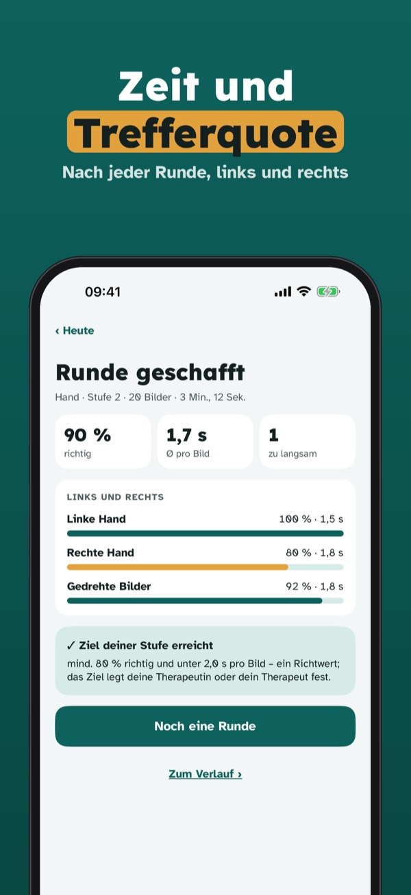
Laterio ist ein Training zur Links-Rechts-Erkennung, begleitet von deiner Physiotherapeutin oder deinem Physiotherapeuten: Bilder erkennen, Zeit messen, Verlauf sehen.
Hand-Training in Stufe 1 und 2, das Ergebnis jeder Runde und die Anleitung kannst du ohne Kauf nutzen. Die Vollversion ist ein Einmalkauf und schaltet Fuß, Rücken und Schulter, alle Stufen, Verlauf, Plan und Erinnerungen frei. Kein Abo.
Laterio ist kein Medizinprodukt, stellt keine Diagnose und ersetzt keine Therapie. Nutze die App in Absprache mit deiner Physiotherapeutin oder deinem Physiotherapeuten. Nicht mit einem Verband oder Hersteller verbunden.
Terms of Use (EULA): https://www.apple.com/legal/internet-services/itunes/dev/stdeula/
Privacy: https://baytechbv.github.io/privacy/laterio-eu/
Hand, voet en rug herkennen
Links-rechts training met beelden van hand, voet en rug: meet tijd en score, volg je voortgang – samen met je fysiotherapeut.
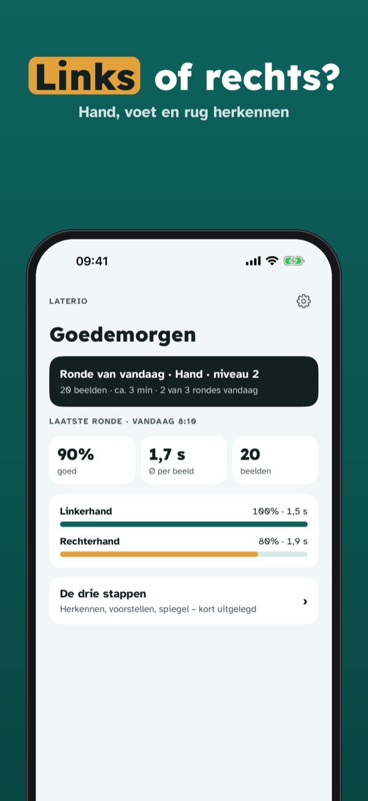
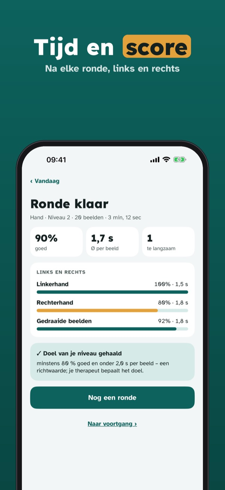
Laterio is een training om links en rechts te herkennen, begeleid door je fysiotherapeut: beelden herkennen, tijd meten, voortgang zien.
Handtraining op niveau 1 en 2, de uitslag van elke ronde en de uitleg kun je zonder aankoop gebruiken. De volledige versie is een eenmalige aankoop voor voet, rug en schouder, alle niveaus, voortgang, schema en herinneringen. Geen abonnement.
Laterio is geen medisch hulpmiddel, stelt geen diagnose en vervangt geen therapie. Gebruik de app in overleg met je fysiotherapeut. Niet verbonden aan een vereniging of fabrikant.
Terms of Use (EULA): https://www.apple.com/legal/internet-services/itunes/dev/stdeula/
Privacy: https://baytechbv.github.io/privacy/laterio-eu/
Höger–vänster: hand, fot, rygg
Träna att känna igen höger och vänster med bilder av hand, fot och rygg: mät tid och träffsäkerhet och följ dina framsteg – tillsammans med din fysioterapeut.
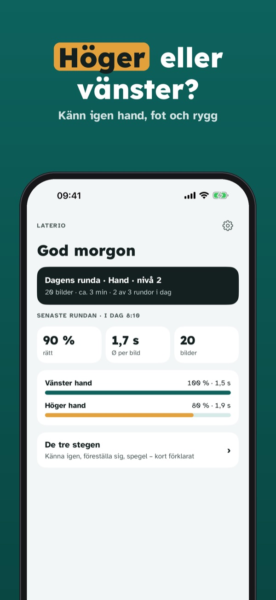
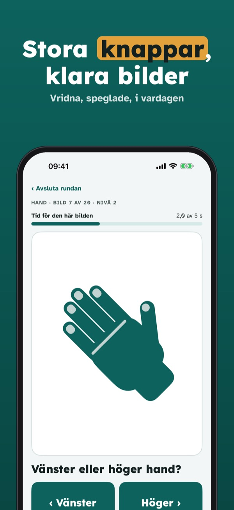
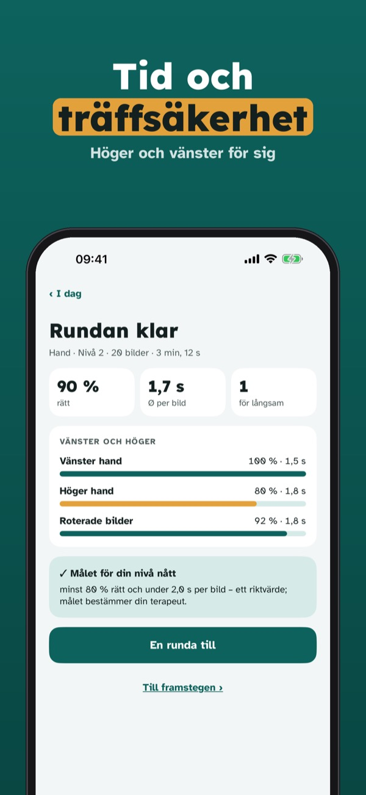
Laterio är träning i att känna igen höger och vänster, med stöd av din fysioterapeut: känn igen bilder, mät tiden, se framstegen.
Handträning på nivå 1 och 2, resultatet av varje runda och guiden kan användas utan köp. Fullversionen är ett engångsköp som låser upp fot, rygg och axel, alla nivåer, framsteg, plan och påminnelser. Ingen prenumeration.
Laterio är ingen medicinteknisk produkt, ställer ingen diagnos och ersätter inte behandling. Använd appen i samråd med din fysioterapeut. Inte knuten till något förbund eller någon tillverkare.
Terms of Use (EULA): https://www.apple.com/legal/internet-services/itunes/dev/stdeula/
Privacy: https://baytechbv.github.io/privacy/laterio-eu/
Venstre–høyre: hånd, fot, rygg
Tren på å kjenne igjen venstre og høyre med bilder av hånd, fot og rygg: mål tid og treffsikkerhet og følg fremgangen – sammen med fysioterapeuten din.
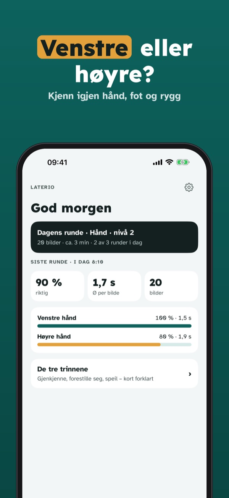
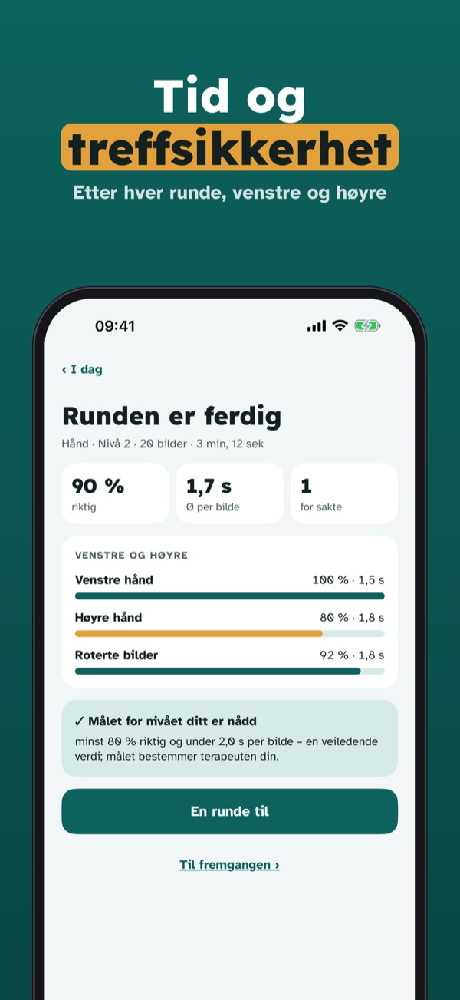
Laterio er trening i å kjenne igjen venstre og høyre, fulgt opp av fysioterapeuten din: kjenn igjen bilder, mål tiden, se fremgangen.
Håndtrening på nivå 1 og 2, resultatet av hver runde og veiledningen kan brukes uten kjøp. Fullversjonen er et engangskjøp som låser opp fot, rygg og skulder, alle nivåer, fremgang, plan og påminnelser. Ingen abonnement.
Laterio er ikke medisinsk utstyr, stiller ingen diagnose og erstatter ikke behandling. Bruk appen i samråd med fysioterapeuten din. Ikke tilknyttet noe forbund eller noen produsent.
Terms of Use (EULA): https://www.apple.com/legal/internet-services/itunes/dev/stdeula/
Privacy: https://baytechbv.github.io/privacy/laterio-eu/
Venstre–højre: hånd, fod, ryg
Træn i at genkende venstre og højre med billeder af hånd, fod og ryg: mål tid og træfsikkerhed og følg dine fremskridt – sammen med din fysioterapeut.
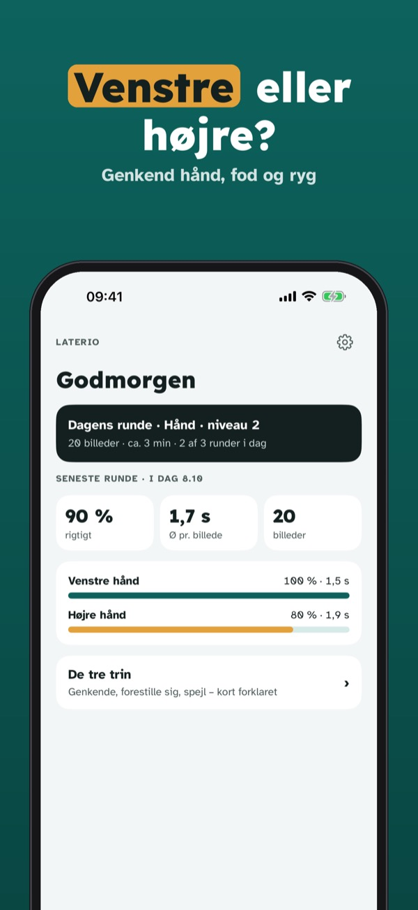
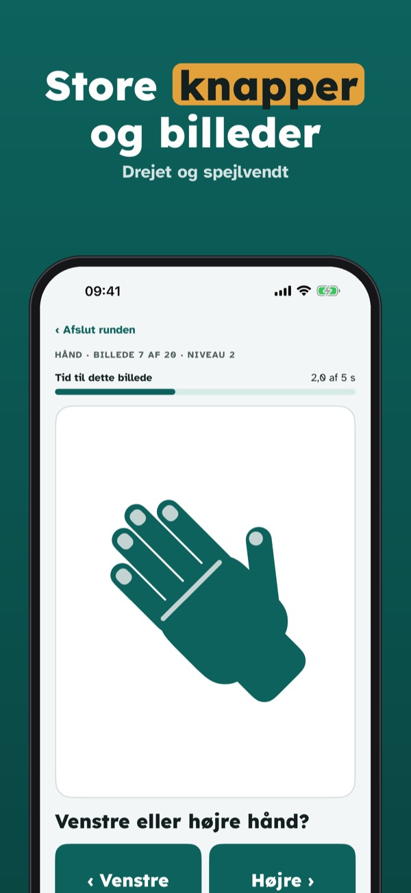
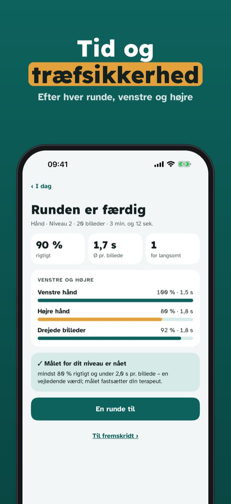
Laterio er træning i at genkende venstre og højre, fulgt af din fysioterapeut: genkend billeder, mål tiden, se fremskridtene.
Håndtræning på niveau 1 og 2, resultatet af hver runde og vejledningen kan bruges uden køb. Den fulde version er et engangskøb, der låser fod, ryg og skulder, alle niveauer, fremskridt, plan og påmindelser op. Intet abonnement.
Laterio er ikke medicinsk udstyr, stiller ingen diagnose og erstatter ikke behandling. Brug appen i samråd med din fysioterapeut. Ikke tilknyttet noget forbund eller nogen producent.
Terms of Use (EULA): https://www.apple.com/legal/internet-services/itunes/dev/stdeula/
Privacy: https://baytechbv.github.io/privacy/laterio-eu/
Vasen vai oikea? Käsi ja jalka
Harjoittele vasemman ja oikean tunnistamista käden, jalan ja selän kuvilla: mittaa aika ja osumatarkkuus ja seuraa edistymistä – yhdessä fysioterapeuttisi kanssa.
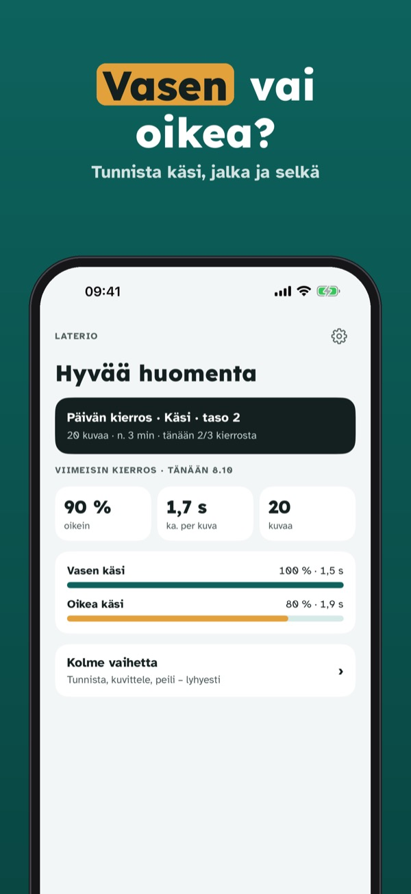
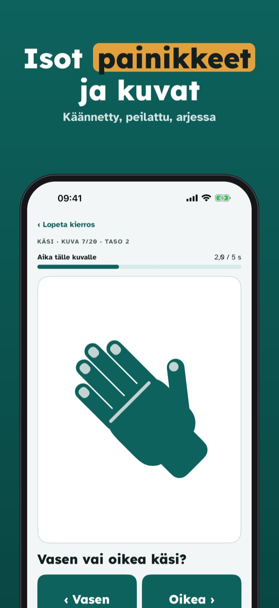
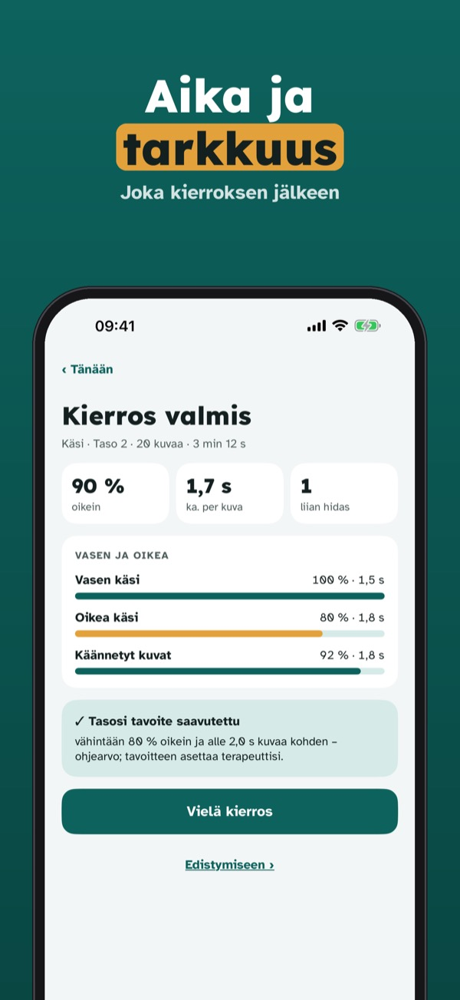
Laterio on vasemman ja oikean tunnistamisen harjoitus, jota fysioterapeuttisi ohjaa: tunnista kuvia, mittaa aika, näe edistyminen.
Käsiharjoittelua tasoilla 1 ja 2, jokaisen kierroksen tulosta ja opasta voi käyttää ilman ostoa. Täysi versio on kertaosto, joka avaa jalan, selän ja olkapään, kaikki tasot, edistymisen, suunnitelman ja muistutukset. Ei tilausta.
Laterio ei ole lääkinnällinen laite, ei tee diagnoosia eikä korvaa hoitoa. Käytä sovellusta yhdessä fysioterapeuttisi kanssa. Ei yhteydessä mihinkään liittoon tai valmistajaan.
Terms of Use (EULA): https://www.apple.com/legal/internet-services/itunes/dev/stdeula/
Privacy: https://baytechbv.github.io/privacy/laterio-eu/